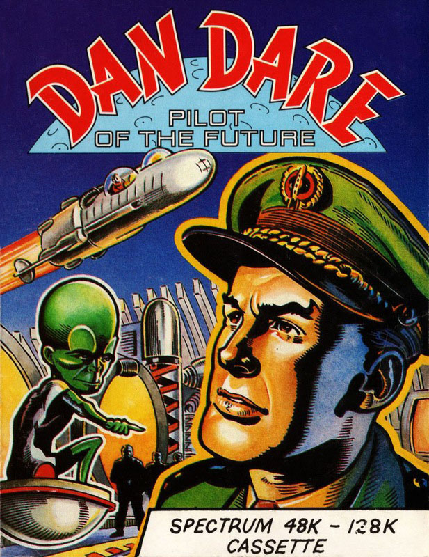
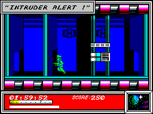
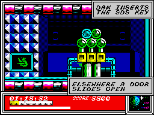
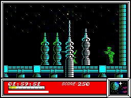

Dan Dare


{kind=link}

| Publisher: | Virgin |
| Price: | £9.95 |
| Year: | 1986 |
| Source: | CRASH, Issue 32 |

Dan Dare lives dangerously. Most of the time he has no choice — heroic deeds are forced upon him because he’s the bravest guy around. This time the nasty Mekon has decided to hold the world to ransom. Dan’s just about to receive the highest accolade of all — an appearance on ‘This is Your Life’ — when the TV waves are unceremoniously taken over by the ugly visage of the Mekon. Earth must either submit to him as commander of the universe or accept the dire consequences...
The Mekon has hollowed out an asteroid, the size of a small planet, and has set it on a collision course with Earth. If Earth agrees to the Mekon’s demands, the nasty asteroid will be detonated and the Earth rendered safe again. The only snag is that a green slimy alien will rule the world. Is the Mekon going to get his wicked way? Not if Dan Dare can help it!

who stands stoically in the chamber on
the left.
Accompanied by his faithful friend Digby, Dan Dare sets off in his speedy spaceship, the Anastasia, and heads for the approaching asteroid. When they arrive on the Mekon’s space projectile, Dan leaves Digby to guard the ship and starts to explore the asteroid. He has a mere two hours at his disposal to save the world from alien domination.
Dan soon realises his task is going to be far more difficult than he first thought. For one thing the asteroid is inhabited by Treens, alien troopers guarding the Mekon’s blackmail vehicle. Should a Treen catch up with Dan, the hero loses energy and might well be taken prisoner. Treens can also knock him out which, like doing a bit of ‘porridge’, loses Dan valuable time. Laser bolts fired by the automatic defence systems (and the Treens) are also bad for Dan’s health and well-being. Fortunately Dan is not defenceless, and is equipped with a nifty laser gun which makes short shrift of any Treens that get in the way of a laser blast.

sections of the detonation device to the
control room — and the screen captions
give an update on the action
Dan finds himself in a subterranean world in which there are five levels. He has to find his way through a network of floors, travelling up and down in lifts, until he finds the self-destruct mechanism which will obliterate the asteroid before it has chance to collide with the Earth. To do this, however, five vital pieces of the mechanism have to be found and assembled in the control room — one part of the contraption has been hidden on each level. The lifts work sporadically, and indicator arrows reveal the directions of travel available.
Dan is a superfit fellow, capable of moving left and right, up and down, and he can jump over chasms and duck to avoid Treen laser bolts. To help him in his quest, a variety of objects lying around can be collected by jumping onto them, including bullets to boost his arsenal and pills to increase his energy.
As the game loads, the faces of the two protagonists — Dan Dare and the dreaded Mekon — are displayed on screen, and the action starts with the Anastasia speeding towards the asteroid. The game follows the flick screen format, with the status area below the action zone. The total score and the amount of time Dan has left in hours, minutes and seconds is displayed and two bars indicate the strength of Dan’s arsenal and his energy level.
During play, screen captions in the style of the original comic strips pop on screen from time to time to explain what has happened to Dan — when he’s knocked unconscious, for example. If Dan manages to thwart the Mekon’s plan, the Anastasia is shown speeding away from the asteroid just before it explodes and then the end sequence displays the explosion itself.
CRITICISM

evil Mekon’s asteroid, Dan puts paid to a
Treen
“I must confess to not being an avid reader of the old Dan Dare comic strip, but of course like everyone else I’ve heard all about his dealings with the Mekon. This game defies all adjectives — to my mind, it’s one of the best on the Spectrum. If you thought Ultimate had hit new boundaries on the Spectrum, then take a look at this. The graphics are amazing: I wondered if it was really a Spectrum that was producing these amazingly colourful graphics. Dan is superbly animated and doesn’t slow down one iota when lots of baddies appear on the screen. I found that Dan Dare was extremely playable and a pleasure to play. You have to buy it to believe it.”
“At first sight Dan Dare didn’t really appeal to me as it didn’t seem that original, but after playing for a while it did start to grow on me. The game is fairly easy to play; running around the place shooting green nasties and retracing your steps at high speed isn’t exactly brain taxing, but it’s jolly good fun all the same. The graphics are good: all the characters move around smoothly and the backgrounds are very pretty. The sound when compared to the graphics is a major disappointment — only a couple of spot effects in the whole game. A very slick piece of programming, but I wonder if I’ll still be playing Dan Dare in a couple of weeks’ time...”
“Anyone out there, who didn’t read the old Eagle comics? I loved the comic strips, and I like the game too. The graphics are very good, but the colour is simply astounding — surely the best on the Spectrum yet? Dan passes in front of and behind the scenery without the slightest sign of attribute clash. The game is playable, addictive, and generally well worth the time, effort, and money of any self respecting Spectrum owner or Dan Dare fan.”
COMMENTS
| Control keys: | Q up, A down, P right, B, N, M, SYM SHIFT, SPACE to fire |
| Joystick: | Kempston, Cursor |
| Keyboard play: | No problems |
| Use of colour: | Very cleverly done, bright and attractive |
| Graphics: | Excellent |
| Sound: | Not enough, really |
| Skill levels: | One |
| Screens: | 125/130 (ish) |
| General rating: | A game which lives up to the image of the cartoon character |
| Use of computer: | 93% |
| Graphics: | 95% |
| Playability: | 93% |
| Getting started: | 91% |
| Addictive qualities: | 91% |
| Value for money: | 90% |
| Overall: | 92% |